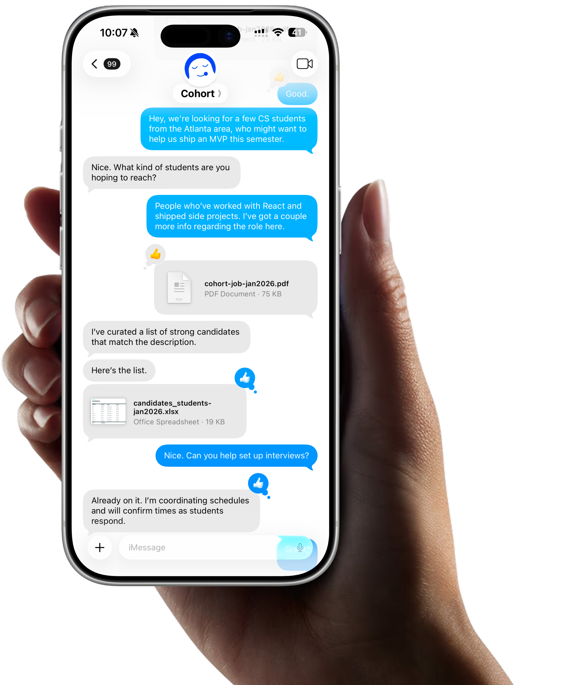

02Case Study
The investor cut of Cohort — an unlisted, scroll-driven narrative that builds momentum toward a single ask. Every chapter raises the stakes. The close is two email addresses on white space.
The investor page lives at an unlisted route — not linked from anywhere, not indexed. The only way in is to be handed the URL directly. That constraint became part of the design: a page that earns its exclusivity by being worth the directness.
The surface narrative is one continuous scroll — no sections, no headers, no slide-deck structure. The depth lives inside inline pills that expand in context. Readers who go deep stay in the flow. Readers who scan still get the thesis.
The network no one else can build.


Chapter the argument
Broke the thesis into escalating beats — problem, product, moat, business model, traction, team, ask. Each owns its viewport. Nothing feels cramped.
Sentence-case composure
Reused the Cohort token system but shifted voice to sentence case, precise. The reader should feel like they're in a serious room.
Inline pill expansions
Key terms open inline — revealing stats, graphs, demo chat, and traction data in context. No modals. The reader never leaves the narrative.
Land on white space
The close strips everything back to two email addresses. No button, no form. Restraint as confidence — the product is good enough to be worth reaching for.